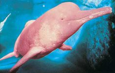

Belezas da Mata Atlântica
Na exuberante Mata Atlântica, os tucanos reinam em cores vibrantes e mistérios. Com seu bico extravagante e comportamento social cativante, essas aves desempenham um papel vital na dispersão de sementes e na manutenção da floresta. No entanto, enfrentam ameaças crescentes devido à destruição do habitat e à caça ilegal. Proteger essas aves é preservar não apenas sua beleza, mas também a riqueza da Mata Atlântica.
Pantanal
No Pantanal, as onças-pintadas reinam supremas. Neste habitat alagado, elas personificam a beleza e a selvageria. No entanto, enfrentam ameaças devido à perda de habitat e conflitos com humanos. Proteger o Pantanal é vital para preservar não apenas as onças-pintadas, mas toda a biodiversidade desse ecossistema único.
Sertão Selvagem
No sertão brasileiro, os tamanduás-bandeira são mestres da adaptação. Com suas garras afiadas e língua ágil, buscam alimento enquanto enfrentam ameaças como a perda de habitat e conflitos humanos. Protegê-los é vital para preservar a biodiversidade única deste ambiente árido.
Amazônia Viva

Na Amazônia, os botos-cor-de-rosa encantam com sua cor rosa e graça. Cruciais para o equilíbrio ecológico, enfrentam ameaças como a destruição do habitat. Proteger a Amazônia é proteger esses ícones da fauna brasileira.
Belezas da Mata Atlântica
Na exuberante Mata Atlântica, os tucanos reinam em cores vibrantes e mistérios. Com seu bico extravagante e comportamento social cativante, essas aves desempenham um papel vital na dispersão de sementes e na manutenção da floresta. No entanto, enfrentam ameaças crescentes devido à destruição do habitat e à caça ilegal. Proteger essas aves é preservar não apenas sua beleza, mas também a riqueza da Mata Atlântica.